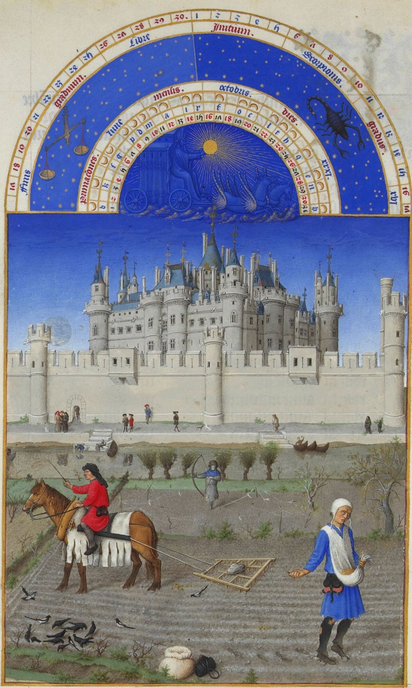
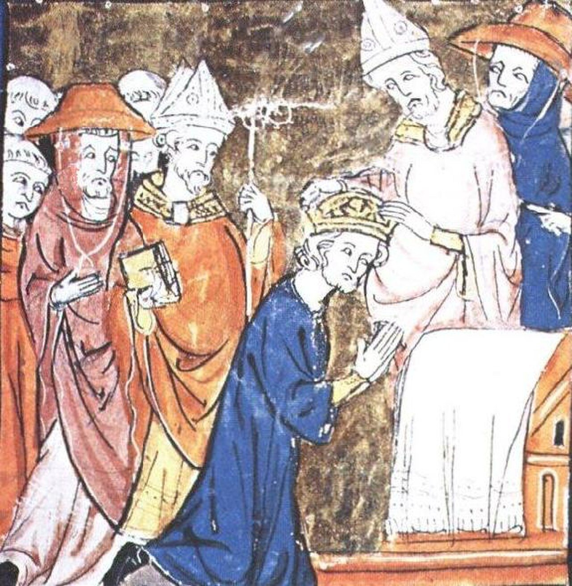
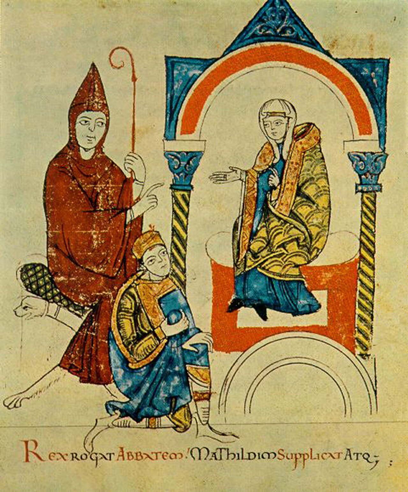

사진 · 베리 공의 기도서 10월
중학교 역사① · 3단원 세계 종교의 확산과 지역 문화의 발전
장원중세 유럽: 교회와 봉건제
림부르 형제, 『베리 공의 매우 호화로운 기도서』 10월 · 퍼블릭 도메인
“중세 사람들은
중세 사람들은
누구에게 충성했을까?
사실왕 · 영주 · 기사 · 농노 · 교회
해석서로 무엇을 주고받았나
확장충성이 부딪칠 때

사진 · 왜 교황이
왕관을 씌웠을까?
왜 교황이
왕관을 씌웠을까?
사실800년 크리스마스, 카롤루스의 대관
해석교황과 프랑크 왕의 손잡기
확장이 그림은 언제 그렸을까
카롤루스의 대관(『프랑스 대연대기』 삽화, 중세 말) · 퍼블릭 도메인
봉건 관계
주군땅(봉토)을 준다
봉신 · 기사싸우고 충성한다
농노일하고 바친다
사진 · 이 그림을
주문한 사람은 누구일까?
이 그림을
주문한 사람은 누구일까?
누가프랑스 왕족 베리 공작
누구에게자기 자신과 손님에게
사실·주장평화로워 보이는 농민들
림부르 형제, 『베리 공의 매우 호화로운 기도서』 10월 · 퍼블릭 도메인
교회
사실세례에서 장례까지
해석십일조와 교회의 땅
확장글을 아는 사람들

사진 · 황제가 왜
무릎을 꿇었을까?
황제가 왜
무릎을 꿇었을까?
누가황제 하인리히 4세
다툼성직자를 누가 임명할까
사실·주장이 그림은 누구 편일까
『마틸다의 생애』(1115년 무렵) 속 하인리히 4세 · 바티칸 도서관 · 퍼블릭 도메인
교황은 해,
황제는 달
사실13세기 초 교황 인노켄티우스 3세
해석교황권의 절정
확장누구의 비유일까
기도하는 사람,
싸우는 사람,
일하는 사람
누가이렇게 나눈 사람은 누구
해석맨 앞에 선 사람은
확장빠진 사람은
1054
사실로마와 콘스탄티노폴리스의 교회가 갈라지다
해석가톨릭과 그리스 정교
확장비잔티움 제국
주군과 교황이
싸운다면?
나는 기사다. 누구 편에 설까?
“중세 사람들이 가장 먼저 충성한 것은 이었다.